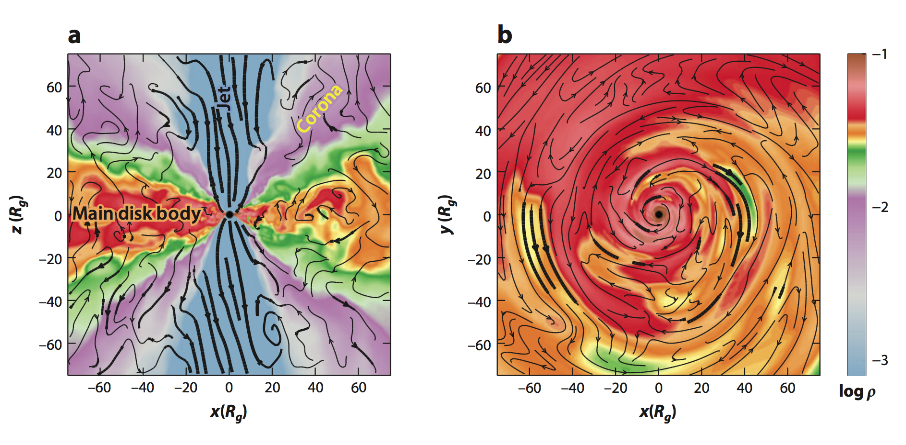
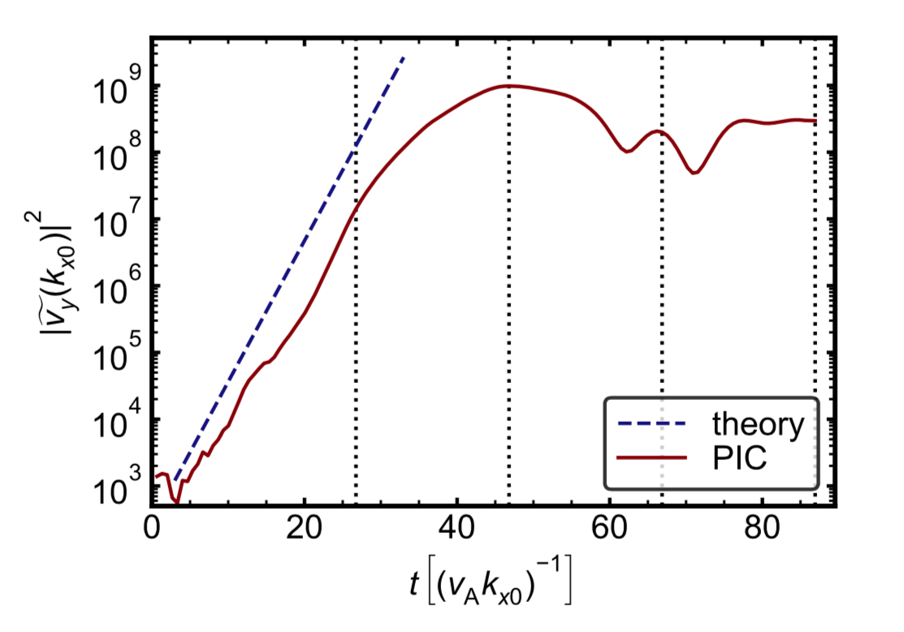

Magnetic dissipation in collisionless accretion flows
Michael Rowan
Adviser: Ramesh Narayan; Co-adviser: Lorenzo Sironi
8-26-2019
Outline
- Introduction
- Magnetic reconnection
- Kelvin-Helmholtz instability
Black hole distance scales $\gg$ plasma scales
Sgr A$^{*}$ (black hole at the center of our galaxy) has Schwarzschild radius $R_{\rm G} \sim 10^{12}\,{\rm cm}$
For the corona of Sgr A$^{*}$, plasma scale is: $c/\omega_{\rm pe} \sim 1\,{\rm cm}$
This is a challenge for numerical (MHD) simulations of black hole environments, which resolve only the macroscopic scales
Plasma physics controls energy dissipation at small scales:
- Reconnection
- Shocks
- Turbulence
Can turbulence or other instabilities induce reconnection?
Structure of black hole accretion flows
Reconnection is well-studied in non-relativistic
- Solar corona
- Earth's magnetosphere
and relativistic systems
- Jets (AGN, GRB)
BH coronae expected to be inbetween these two limits:
$\Rightarrow$ 'transrelativistic'

Structure of black hole accretion flows
Outline
- Introduction
- Magnetic reconnection
- Kelvin-Helmholtz instability
'Cartoon' picture of reconnection
Magnetic energy $\Rightarrow$ kinetic (heating, acceleration, bulk motion)
Center for Visual computing, University of California Riverside
Magnetic tension drags away field lines at the Alfvén speed:
\[\begin{aligned} \frac{v_{\rm A}}{c} & = \sqrt{\frac{\sigma_{w}}{1+\sigma_{w}}}, {\rm where } \, \sigma_{w} \propto \frac{{\rm magnetic\,pressure}}{{\rm enthalpy\,density}} \end{aligned} \]
Reconnection occurs in all sorts of plasmas
Occurs in magnetized plasmas, like the solar corona:
What would reconnection look like in black hole coronae?
Key questions in reconnection physics
How much magnetic energy is dissipated to electrons, ions?

PiC: Particle in Cell
- Lorentz force law
- Maxwell equations (Ampère's law, Faraday's law)
- Divergence Eqs. satisfied at initialization
- $\Rightarrow$ satisfied throughout time evolution
TRISTAN-MP
2D in space, but track all 3 components of momentum
PiC: Particle in Cell
- Lorentz force law
- Maxwell equations (Ampère's law, Faraday's law)
- Divergence Eqs. satisfied at initialization
- $\Rightarrow$ satisfied throughout time evolution
TRISTAN-MP
2D in space, but track all 3 components of momentum
Describe plasma with a few parameters
"Plasma-beta," "magnetization," and "guide field strength" describe the initial state of the upstream plasma:
\[\begin{aligned} \beta_{\rm i} = \frac{n_{\rm i} k_{\rm B} T_{\rm i}}{B_{0}^{2}/8 \pi} & = \frac{\rm \color{#f6656c}{thermal\,pressure}}{\rm \color{#6ca0e8}{magnetic\,pressure}} \\ \sigma_{w} = \frac{B_{0}^{2}/4 \pi}{w} & = \frac{\rm \color{#6ca0e8}{magnetic\,pressure\,(\times 2)}}{\rm \color{#5AE769}{enthalpy\,density}} \\ b_{g} = B_{z}/B_{0} & = \frac{\text{Strength of out-of-plane } B}{\text{Strength of in-plane } B} \end{aligned} \]
Tune these in the upstream, measure heating in the downstream
How to describe heating efficiency?
How much are particles heated? Define heating fractions for e$^{-}$, p$^{+}$:
\[\begin{aligned} M_{T\rm e} & = \frac{\theta_{\rm e,down} - \theta_{\rm e,up}}{\frac{m_{\rm i}}{m_{\rm e}} \sigma_{\rm i}}, \, M_{T\rm i} = \frac{\theta_{\rm i,down} - \theta_{\rm i,up}}{\sigma_{\rm i}} \end{aligned} \]

Electron heating in non-rel. regime
Heating fraction can be written as:
$M_{T\rm e} = \frac{k_{\rm B} T_{\rm e,out} - k_{\rm B} T_{\rm e,in}}{m_{\rm i} v_{\rm A}^{2}}$
(slope of black line in this plot $\rightarrow$)
For wide range of inflow parameters, $M_{T\rm e}$ is constant
$M_{T\rm e} \approx 0.033$ for $m_{\rm i}/m_{\rm e}=25$. When extrapolated to realistic mass ratio $m_{\rm i}/m_{\rm e}=1836,$ $M_{T\rm e} \approx 0.017$
Simulation setup: inflow parameters
| $$\beta_{\rm i}$$ | $$\sigma_{\rm i}$$ | $$\theta_{\rm e}$$ | $$\theta_{\rm i}$$ |
|---|---|---|---|
| 4.9$~\times~$10$^{\rm -4}$ | 0.10 | 0.010 | 2.4$~\times~$10$^{\rm -5}$ |
| 0.031 | 0.10 | 0.041 | 0.0016 |
| 0.50 | 0.12 | 0.77 | 0.031 |
| 2.0 | 0.38 | 9.9 | 0.39 |
- For each case, vary guide field from $b_{\rm g}=0$ (antiparallel) to $6$
- Electron temperature ranges from non-rel. to ultra-rel.
- Ions remain sub-relativistic
- Realistic mass ratio: $m_{\rm i}/m_{\rm e}=1836$, and $T_{\rm e}/T_{\rm i}=1$
- $\sigma_{w}=0.1$ for each row in the table; $\sigma_{\rm i}$ changes
- For a few cases, vary $\sigma_{w}$ and $T_{\rm e}/T_{\rm i}$
Simulation setup: trigger reconnection
B-field initialized in Harris equilibrium:
$\mathbf{B} = B_{0} {\rm tanh}(y/\Delta)\mathbf{\hat{x}}$
- Hot, overdense strip of particles (green)
- Remove particle pressure in center to drive reconnection
- System evolves self-consistently

Simulation setup: trigger reconnection
B-field initialized in Harris equilibrium:
$\mathbf{B} = B_{0} {\rm tanh}(y/\Delta)\mathbf{\hat{x}}$
- Hot, overdense strip of particles (green)
- Remove particle pressure in center to drive reconnection
- System evolves self-consistently

Simulation setup: trigger reconnection
B-field initialized in Harris equilibrium:
$\mathbf{B} = B_{0} {\rm tanh}(y/\Delta)\mathbf{\hat{x}}$
- Hot, overdense strip of particles (green)
- Remove particle pressure in center to drive reconnection
- System evolves self-consistently
Simulation setup: trigger reconnection
B-field initialized in Harris equilibrium:
$\mathbf{B} = B_{0} {\rm tanh}(y/\Delta)\mathbf{\hat{x}}$
- Hot, overdense strip of particles (green)
- Remove particle pressure in center to drive reconnection
- System evolves self-consistently
Simulation setup: periodic vs. outflow bc
Use particle mixing as a proxy for rec. region
Use mixing as a criterion to ID cells where rec. has occured:
$r_{\rm down} < \frac{n_{\rm top}}{n_{\rm tot}}<1-r_{\rm down}$
- Measured heating fractions $M_{T\rm e}, M_{T\rm i}$ somewhat sensitive to choice of $r_{\rm down}$
- Change of $\sim 15\%$ from $r_{\rm down}=0.1$ to $0.3$
- Mixing criterion appropriate for nonzero guide field

Focus on particles in 'primary islands'
Focus on 'island' region, where energy of bulk motion from outflows has thermalized:
- Select region within a contour of the vector potential $A_{z}$ as 'island'
- Threshold value of vector potential is chosen based on mixing at $x= \pm 1000 \, c/\omega_{\rm pe}$
- Exclude particles leftover from initialization (gray region at cores of island)
Adiabatic-compressive vs. genuine heating
When gas is compressed adiabatically, internal energy increases and entropy per particle remains constant
How much heating in the downstream is an effect of adiabatic-compression (no increase in entropy)?
\[\begin{aligned} \int_{u^{\rm up}}^{u^{\rm f}} \frac{1}{(\hat{\gamma}(u)-1)u} du - \log \left(\frac{n^{\rm f}}{n^{\rm up}}\right) = 0 \end{aligned} \]
- Solve for $u_{\rm f}$, the predicted dimensionless internal energy
- Take the difference $u_{\rm down} - u_{\rm f}$ as the genuine heating
Measure heating when 'quasi-steady'
Extract heating by measuring 'quasi-steady' values in the island region; time average heating over $\sim1$ Alfvénic crossing time:
Low-$\beta_{\rm i}$, antiparallel reconnection ($b_{\rm g}=0$)
Simulation parameters: $\beta_{\rm i}=0.0078, \sigma_{w}=0.1, T_{\rm e}/T_{\rm i}=0.1$
- 'Wavefronts' recede at Alfvén speed (dragged by magnetic tension); plasma starts flowing into the reconnection layer
- Primary islands (the large blobs) contain particles used at initialization; secondary islands form due to tearing instability
High-$\beta_{\rm i}$, antiparallel reconnection ($b_{\rm g}=0$)
Simulation parameters: $\beta_{\rm i}=2, \sigma_{w}=0.1, T_{\rm e}/T_{\rm i}=0.1, {\color{lime}{ N_{\rm ppc}=64}}$
- No secondary islands
- Outflow is more homogeneous than in low-$\beta_{\rm i}$ case
- Fractional increase of quantities in reconnection exhaust is less than at low-$\beta_{\rm i}$ (e.g. electron and ion temperatures, density)
Low-$\beta_{\rm i}$, guide field dependence
Simulation parameters: $\beta_{\rm i} = 0.03, \sigma_{w} =0.1, b_{\rm g}=0.3, 1, 6$
-
Guide field radically shifts energy partition between electrons and protons; electrons heated more than protons at high-$b_{\rm g}$
High-$\beta_{\rm i}$, guide field dependence
Simulation params: $\beta_{\rm i} = 2, \sigma_{w} =0.1, b_{\rm g}=0.3, 1, 6, {\color{lime}{ N_{\rm ppc}=64}}$
-
At high-$\beta_{\rm i},$ electrons and protons are generally in equipartition, but guide field tends to suppress overall amount of heating
Results I(a): transrel. heating, no guide field
- Increasing magnetization at fixed $\beta_{\rm i}$: plasma is more relativistic
- Seems to hasten onset of transition to rel. regime
- Decreasing elec., prot. scale-separation $\Rightarrow$ energy equipartition

Results I(b): transrel. heating, guide field
- Electron irr. heating at low-$\beta_{\rm i}$ nearly independent of $b_{\rm g}$
- For $\beta_{\rm i}\sim\beta_{\rm i, max}$, both electron and proton irr. heating are nearly independent of $b_{\rm g}$; scale separation is about equal in this case
Results II(a): $b_{\rm g}$-dependence of heating
-
Elec. irr. heating fraction:
\[\begin{aligned} q_{u\rm e, irr} & = \frac{M_{u\rm e,irr}}{M_{u\rm e,irr} +M_{u\rm i,irr}} \end{aligned} \]
-
Fitting function provides dep. of elec. irr. heating on plasma parameters:

\[\begin{aligned} q_{u \rm e, irr, fit}(\beta_{\rm i}, b_{\rm g}, T_{\rm e}/T_{\rm i}, \sigma_{w}) = \frac{1}{2} (\tanh(0.33 b_{\rm g})-0.4) \\ \times 1.7 \tanh \left( \frac{(1-\beta_{\rm i}/\beta_{\rm i, max})^{1.5}}{(0.42 + T_{\rm e}/T_{\rm i})\sigma_{w}^{0.3}}\right) + \frac{1}{2} \end{aligned} \]
Results II(b): $b_{\rm g}$-dependence of heating
Particle heating in the presence of a guide field looks more similar to heating via turbulence; at small enough scales, turbulence is thought to be mediated by strong guide field reconnection
Results III(a): Guiding-center analysis
Track particles from upstream to downstream to assess relative importance of heating mechanisms
\[\begin{aligned} \frac{d \varepsilon_{\rm e}}{dt} = q \mathbf{E} \cdot (\mathbf{v}_{\parallel} + \mathbf{v}_{\rm c} + \mathbf{v}_{\nabla B}) + \frac{\mu}{\gamma} \frac{\partial B}{\partial t} \end{aligned} \]

Results III(b): Guiding-center analysis
Curvature heating tends to dominate for weak guide field, whereas $E$-parallel dominates for strong guide field (in this case, the magnetic field is almost straight in the out-of-plane direction)

Results IV: $b_{\rm g}$-dependence of rec. rate
Guide field suppresses reconnection rate, more variation at low-$\beta_{\rm i}$
Outline
- Introduction
- Magnetic reconnection
- Kelvin-Helmholtz instability
Kelvin-Helmholtz instability occurs all over
KH instability is ubiquitous in nature; here, KH forms in clouds:
How does the KH instability grow?
Velocity perturbation $\perp$ to shear velocity $\beta_{\rm sh}$ $\rightarrow$ unstable growth

Physics of the KH instability
In addition to shear velocity $\beta_{\rm sh}$, consider a magnetic field $B_{0}$ that permeates the plasma
- If the magnetic field is too strong, magnetic tension inhibits KH
- Parametrize relative strength of field by Alfvénic Mach number, $\zeta\equiv v_{\rm A}/c_{\rm s}$; $c_{\rm s}=\sqrt{\Gamma_{\rm ad} \theta/h}$ is the sound speed, $h$ is specific enthalpy
- Instability must also respect the subsonic bound $\mathcal{M}\le\sqrt{2}$
- $\mathcal{M}\equiv \beta_{\rm sh}/c_{\rm s}$ is the Mach number


KH instability in astrophysical jets
A number of simulations suggest evidence for KH instability at the interface of the jet and wind/corona, which motivates a KH setup with:
- Strongly magnetized jet
- Weakly magnetized wind
- Somewhat relativistic shear flow
- KH-induced reconnection?
Addressing the question of magnetic dissipation via magnetic reconnection requires fully-kinetic PIC simulation
Predicted growth rate of KH instabilty
Three-pronged attack to studying KH-induced reconnection:
- What physical parameters lead to KH unstable growth?
- Does PIC capture the predicted growth rate?
- Does PIC show evidence of magnetic dissipation?
To answer the first point, solve relativistic magnetohydrodynamic (RMHD) dispersion relation (i.e., polynomial in $\phi_{v_{\rm A}}$) of the form:
\[\begin{aligned} F(\phi_{v_{\rm A}}, \rm{params}) & = 0 \end{aligned} \]
$\phi_{v_{\rm A}} \equiv \omega/(k_{0} v_{\rm A})$ is the dimensionless growth rate of the mode
Im$(\phi_{v_{\rm A}})>0 \rightarrow $ unstable growth
Predicted growth rate of KH instabilty
Explicit dispersion relation:


Simulation setup
- 'Sit' in rest frame of the jet; wind moves with velocity $\beta_{\rm sh}$
- Jet is strongly magnetized with in-plane magnetic field $B_{x0, \,\rm j}$ and out-of-plane (guide-field) component $B_{z0, \,\rm j}$
- Wind is weakly magnetized with out-of-plane mag. field $B_{z0, \,\rm w}$

Simulation parameters
| $\beta_{{\rm i}x}$ | Plasma-beta in jet, computed with in-plane $B_{x0,\,\rm{j}}$ |
| $\sigma_{wx}$ | Magnetization in jet, computed with in-plane $B_{x0,\,\rm{j}}$ |
| $\beta_{\rm sh}$ | Speed of wind relative to jet |
| $b_{\rm j}$ | $B_{z0,\,\rm{j}}/B_{x0,\,\rm{j}}$; jet guide field strength |
| $b_{\rm w}$ | $B_{z0,\rm{w}}/B_{x0,\,\rm{j}}$; wind guide field strength |
| $\rho_{0\rm j}$ | Mass density in jet |
| $\rho_{0\rm w}$ | Mass density in wind |
| $f$ | $k_{z}/k_{x}$; controls ang. of propagation of perturbation |
Sample simulation: RMHD
Time evolution of Fourier power (left) for RMHD simulation; parameters: $\beta_{\rm sh}=0.8$, $\sigma_{wx}=1$, $\beta_{\rm{i}x}=0.078$, $b_{\rm j}=3$, $b_{\rm w}=0.3$, $\rho_{0\rm{w}}/\rho_{0\rm{j}}=6.7$

Sample simulation: PIC
Time evolution of density for PIC run; parameters: $\beta_{\rm sh}=0.8$, $\sigma_{wx}=1$, $\beta_{\rm{i}x}=0.078$, $b_{\rm j}=3$, $b_{\rm w}=0.3$, $\rho_{0\rm{w}}/\rho_{0\rm{j}}=6.7$
Sample simulation: PIC
Time evolution of Fourier power (left) for PIC run; parameters: $\beta_{\rm sh}=0.8$, $\sigma_{wx}=1$, $\beta_{\rm{i}x}=0.078$, $b_{\rm j}=3$, $b_{\rm w}=0.3$, $\rho_{0\rm{w}}/\rho_{0\rm{j}}=6.7$
Dashed lines below correspond to 2D density profiles $\rightarrow$

Measured growth rate of KH: RMHD
Relativistic MHD simulations show good agreement with prediction:

Growth rate dependence on density ratio $\rho_{0\rm{w}}/\rho_{0\rm{j}}$ shows that even for $\rho_{0\rm{w}}/\rho_{0\rm{j}}\approx 10^3$, growth is reduced by only a factor of $3$–$4$
Measured growth rate of KH: RMHD
Convergence of growth rate with respect to ratio of transition width to box height
Measured growth rate of KH: PIC
- What physical parameters lead to KH unstable growth?
- Does PIC capture the predicted growth rate?
- Does PIC show evidence of magnetic dissipation?

PIC simulations and analytical predictions show good agreement
Errorbars computed as standard deviation of measured slopes from five simulations with different random initial conditions
Measured growth rate of KH: PIC
Growth rates for give simulations with different random initial seeds
Measured growth rate of KH in 3D: PIC
Time evolution of density for 3D simulation; blue is jet, red is wind
parameters: $\beta_{\rm sh}=0.8$, $\sigma_{wx}=1$, $\beta_{\rm{i}x}=0.001$, $b_{\rm j}=3$, $b_{\rm w}=0.3$, $\rho_{0\rm{w}}/\rho_{0\rm{j}}=6.7$; box size is $250\times 750\times 250\, c/\omega_{\rm p e}$ (jet skin depths)
Measured growth rate of KH in 3D: PIC
Comparison of predicted and measured growth rates from 3D run
Note that growth rate is largest for an angle slightly out of $xy$ plane; this angle in fact satisfies $k \cdot B_{0}\approx 0$

Particle acceleration
- What physical parameters lead to KH unstable growth?
- Does PIC capture the predicted growth rate?
- Does PIC show evidence of magnetic dissipation?
Time evolution of electron energy spectra shows evidence for particle energization up to Lorentz factors $\gamma \approx 100$
Summary
Exploration of guide field reconnection (see arXiv:1901.05438):
- low-$\beta_{\rm i}$: irr. elec. heating nearly independent of $b_{\rm g}$
- Protons get heated much less with increasing $b_{\rm g}$
- As a result, for large $b_{\rm g}$, elec. receive the overwhelming majority of irreversible heating (∼93% for $b_{\rm g} = 6$)
- Differs significantly from antiparallel case (~18% vs. ~93%)
Studied KH instability analytically, in RMHD, and in PIC:
- RMHD simulations show good agreement with prediction, validating our dispersion relation calculation
- PIC also shows agreement with dispersion relation
- PIC simulations of KH in jets show particle acceleration
Acknowledgements
- Adviser: Ramesh Narayan
- Co-adviser: Lorenzo Sironi
- Academic adviser/committee member: Masahiro Morii
- Committee member: Doug Finkbeiner
- BHI/CfA admins: Nina Zonnevylle, Barbara Elfman, Mark Palmer, Robb Scholten
- Physics admins: Carol Davis, Lisa Cacciabaudo, Silke Exner
- FAS Research Computing, especially Paul Edmon
Acknowledgements (cont.)
- Current and previous group members: Andrew Chael, Brandon Curd, Xinyi Guo
- BHI/CfA postdocs: Atish Kamble, Xuening Bai, Nick Murphy, Paul Chesler, Feraz Azhar, Maciek Wielgus, and Dom Pesce
- Friends: Jae Hyeon Lee, Dominik Wild, Ron Alexander, Matt Rispoli, Chris Frye, Michael Grome
- Undergraduate advisers: Jason Stalnaker, Bob Bosch
- Family: Mom, Dad, Ren (brother)
Convergence tests
Convergence tests

Convergence tests

Convergence tests

Convergence tests